All-sky: 92 million objects, 71 million galaxies, over the whole extragalactic sky
Euclid: σNMAD = 0.0087, against 0.035 for Euclid's own photo-z; a Euclid standard project paper on this
Paper being written, Murray et al. arxiv.2610.nextweek
UNIONS
Combining UNIONS with SPHEREx, we hope to do better than DES Y6 and Euclid DR1
Euclid clusters
COMB-CL, ready for the CCB
A Euclid key-project paper on the clustering of galaxies around clusters
Astronomy on Tap Paris
The November and December events are organised
Incorporating AI within my work
These slides are made with Lectern: claude makes html, I can directly edit the text with a GUI
Use the density field to understand intrinsic alignments
The density field has high signal-to-noise: millions of well-measured modes.
Galaxy shapes carry the same gravitational information at much lower signal-to-noise, buried under shape noise.
So construct templates from the density field: physical predictions for the shape field, such as linear tidal alignment (LTA) or tidal torquing (QTA).
Cross-correlate each template with the shapes, and learn which physics the shapes follow.
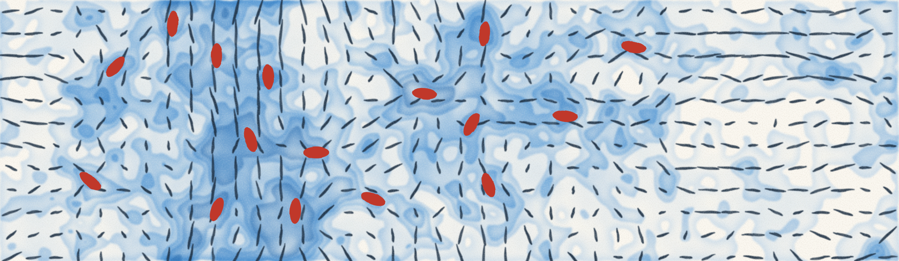
A random density field (blue, deeper where dense), its tidal field (black: the direction it stretches along), and galaxies (red) elongated along it, as linear tidal alignment predicts.
Intrinsic alignments · CMASS
The three fields: density, velocity, shapes
The galaxy field740k tracers · colour = local density
The velocity fieldreconstructed flow Ψ · v ∝ −∇Φ
The shape fieldDECaLS orientations · γ ∝ ∂∂Φ
Intrinsic alignments · the measurements
Four correlation functions
ggdensity × densityξgg ∝ b2
ξgg
gsdensity × shapeξgs ∝ b AIA
ξg+
ξg×
ssshape × shapeξss ∝ AIA2
ξ++
ξ××
ξ×+
svshape × velocityξsv ∝ AIA
ξ++
ξ××
ξ+×
ξ×+
Every pair is binned by its separation and by its angle to the line of sight; cucount correlates any combination of spin-0 positions, spin-1 velocities and spin-2 shapes.
Intrinsic alignments · simulations
In simulations, LTA explains the shapes of dark-matter halos well
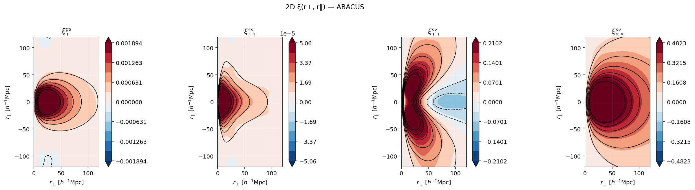
AbacusSummit halos, whose shapes are known exactly: the measured 2D ξ(r⊥, r∥) (filled) with the LTA template on top (contours). gs, ss and the shape–velocity channels are all recovered with a single LTA amplitude.
Intrinsic alignments · the data
The same on CMASS × DECaLS
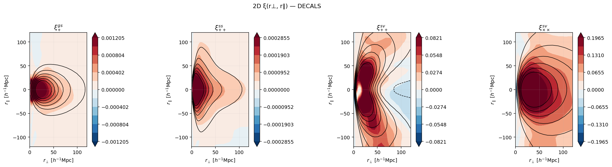
The real data: ξgs+, the shape channel as the cross-correlation ⟨s · sLTA⟩, ξsv++ and ξsv××. Data filled, LTA template in contours: the same panels as the simulation.
Paper to be written
2D lensing
The paper
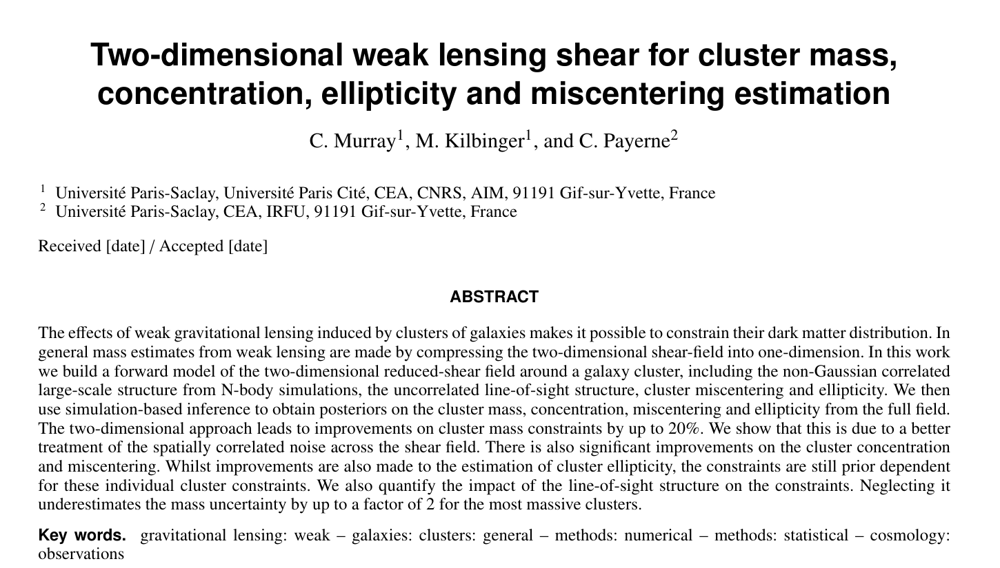
2D lensing · the motivation
Use the whole shear field, not its average in rings
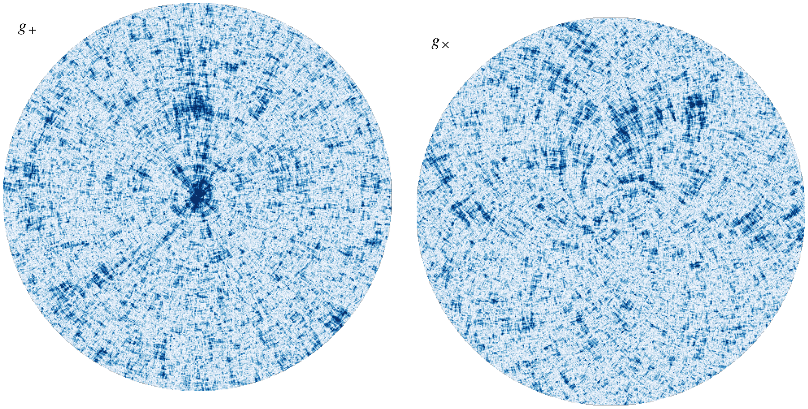
\(g_+\) (left) and \(g_\times\) (right) round one simulated cluster before shape noise: \(M_{200m} = 8\times10^{14}\,M_\odot\), \(c = 4\), \(e = 0.4\), 0.2′ off-centre.
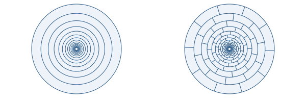
1D: 15 rings
2D: × 10 sectors
2D lensing · the results
The 2D field tightens every parameter
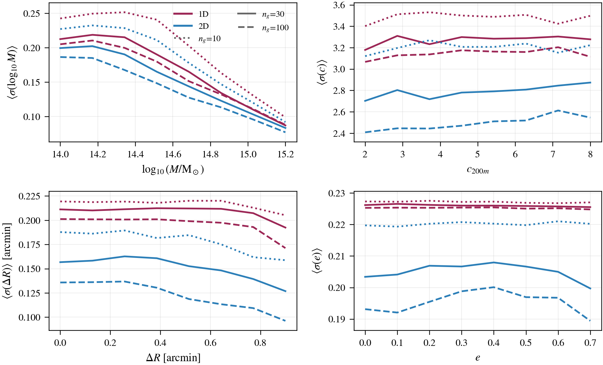
Mean posterior width over 800 noise realisations per point: 1D in red, 2D in blue; dotted, solid, dashed for 10, 30, 100 galaxies per arcmin² (paper Fig. 8b).
Mass8% tighterup to 18% at 100 per arcmin²
Concentration11% tighter19% at 100 per arcmin²
Miscentring21% tighter32% at 100 per arcmin²
Ellipticity6–8% tighterstill set by the prior for one cluster
Gains at 30 galaxies per arcmin², Euclid-like.
SPHEREx
A spectrum of the whole sky, from space
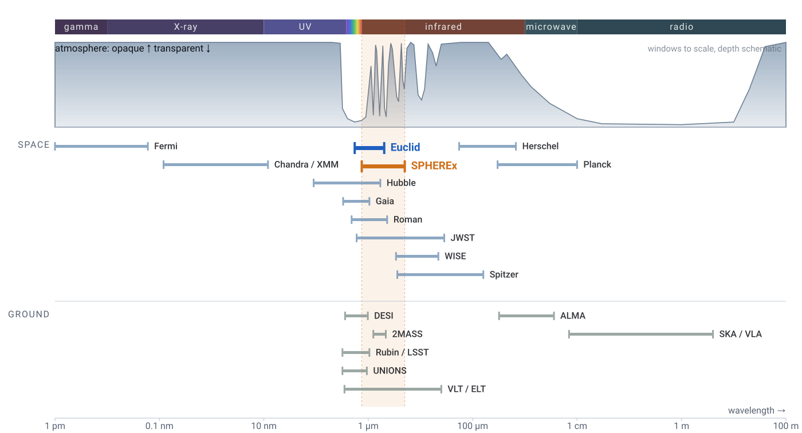
From the ground, the near-infrared is cut into narrow windows. SPHEREx and Euclid observe it from space.
How SPHEREx scans the sky. Animation: NASA/JPL-Caltech (NASA SVS), "Novel Survey Strategy".
Launched 11 March 2025, surveying since 1 May 2025; a 20 cm telescope, 3.5° × 11.3° field
The whole sky every six months, 0.75–5 µm in 102 channels, with 6.2″ pixels
Polar orbit, looking about 90° from the Sun: the ecliptic poles are crossed on every orbit
Euclid × SPHEREx
The same 10′ of sky: Euclid sees the galaxy, SPHEREx its spectrum
Euclid VIS + Y + H · 0.1″ pixels
SPHEREx · 6.2″ pixels · its six detectors in turn, 0.75–5 µm, one brightness scale
SPHEREx · the task
Agentic Science + the SPHEREx catalogues
Something I am not an expert in
If we want to do new science with AI, this needs to be the case. Become an expert as you are doing the work
A concrete product: a catalogue
Trivial for people to work out if the work has been done poorly or not
Will enable other people to do new exciting science (but only if it is good!)
The work is separable into smaller tasks
Agents work well on small well-posed problems
To learn how to do something, do it
You make mistakes, and improve
For example, naming and versioning have been the big problem here: defining version control at the start would have helped, largely for me to talk with Claude
Blocks
Blocks: try to build slowly, not just A->Z
What it is
Its own inputs and outputs, and a check around it that must pass against something outside itself before anything is built on top
Its four parts
Interface: inputs and outputs, so blocks compose and many can be built in parallel
Contract: a check outside it; when it fails, the agent revisits its assumptions
Decisions: its own choices, explicit, implicit and inherited, logged in ASTRA
Size: a variable; how big a block can be is the open question
Two ceilings on block size
Agent reliability: how much an agent can do and get right. Evals measure it, and new models move it
Human understanding: evals cannot move it, and that is the point. The analysis cannot advance faster than I understand it
SPHEREx all-sky · the blocks
The all-sky catalogue, block by block
selection36 choices
footprint19 choices
extraction51 choices
redshifts40 choices
flags, release36 choices
clustering57 choices
The pipeline
Sources selected on VIS-detected DR1 Wide
Sources with 16 < IE < 20.5, de-duplicated at 1″, with no flag cuts at this stage
Forced photometry
Tractor fits the SPHEREx PSF at the fixed Euclid position, once per target per frame that covers it
Co-add onto 77 channels
Each channel takes every observation in its wavelength bin, drops flagged ones, inflates errors per detector, clips at 3σ and takes the inverse-variance mean
Zeropoints
Euclid and ground-band offsets relative to SPHEREx are fitted at the spec-z on half the truth, then frozen and applied
Joint redshift fit
eazy-py fits the 77 channels with VIS, Y, J, H and the ground bands, flat prior, 12 FSPS templates
Stellar fit, same run
The same photometry is fitted with a grid of stellar models; is_star when the best star beats the galaxy fit in χ²
After the fit
The posteriors are recalibrated, and stellar mass, SFR and rest-frame colours come from the same fit
SPHEREx all-sky · how I work with Claude
Issues, an orchestrator, and sub-agents
We have a set of issues.
An orchestrator asks sub-agents to work on them.
A sub-agent solves an issue, and can create new ones.
After too long, a new orchestrator carries on.
Orchestratorthe main session: asks sub-agents to work on issues, and merges their work
Sub-agentone issue, its own worktree and branch
Sub-agentone issue, its own worktree and branch
Sub-agentone issue, its own worktree and branch
sub-agentnot started yet
sub-agent
sub-agent
Issuesthe GitHub tracker
#2 Bright-star halos move the redshifts ✓ solved
#47 A flux offset above 3.8 µm
#11 He I read as Hα: a pile at z ≈ 0.65
#36 9.3% of fits fail
#23 Preferred redshifts: the comb
#76 Frames that hold none of the targetsnew, created by a sub-agent
too much context
Orchestratora new one: reads the old one's HANDOFF.md and carries on
SPHEREx all-sky · solved along the way
We can see airglow from helium with SPHEREx
The low Earth orbit means that SPHEREx sees some of the atmosphere. The Sun lights up He I in the upper atmosphere, and SPHEREx sees it as emission at 1.083 µm. Read naively, it looks like Hα.
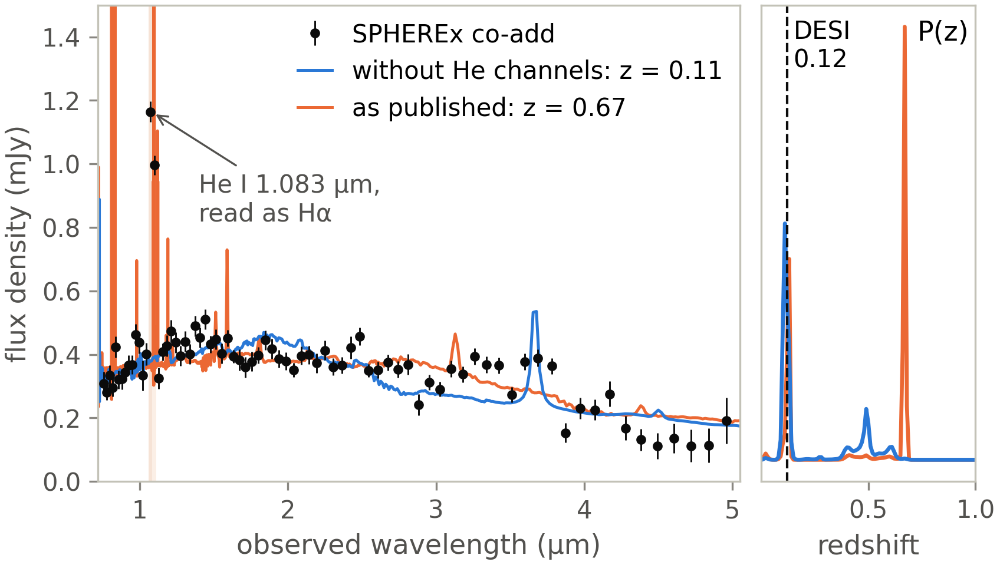
SPHEREx all-sky · solved along the way
SPHEREx images have too conservative masking around stars
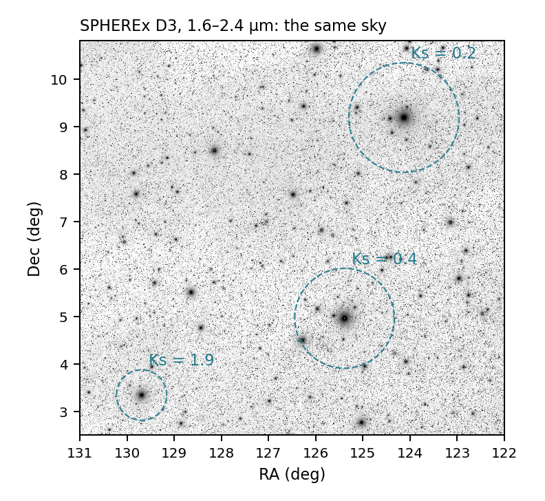
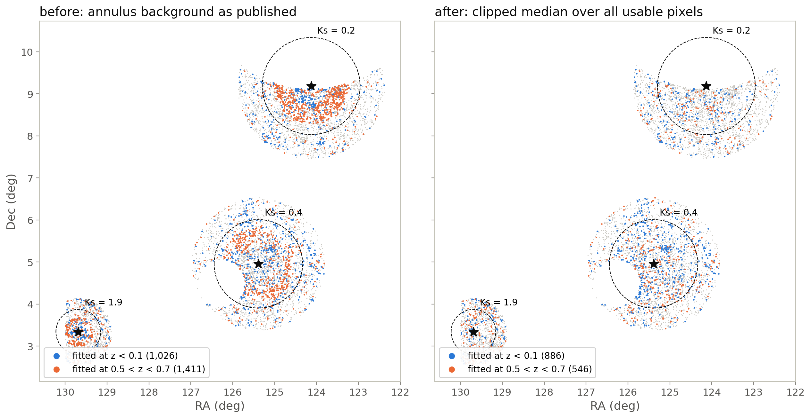
Galaxies round three bright stars: fitted at z < 0.1 (blue) or 0.5 < z < 0.7 (orange). Left, the annulus background as published; right, the clipped median.
SPHEREx all-sky · solved along the way
Two galaxies near a bright star, before and after the new extraction
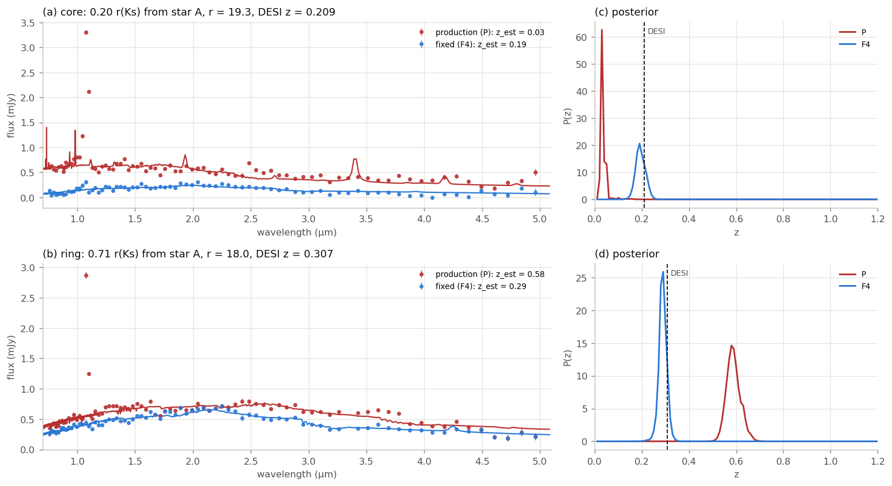
In the core: DESI z = 0.21. Production 0.03, fixed 0.19.
In the ring: DESI z = 0.31. Production 0.58, fixed 0.29.
Red: production. Blue: the fixed background.
Euclid × SPHEREx · the clustering
Galaxy correlations
Randoms generated within the footprint
Iterative systematics weights, as in DES
Maps: dust, star density, SPHEREx depth, ecliptic latitude, zodiacal background, VIS depth, …
Cross-correlations between distant shells close to zero: no more anti-correlation round bright stars
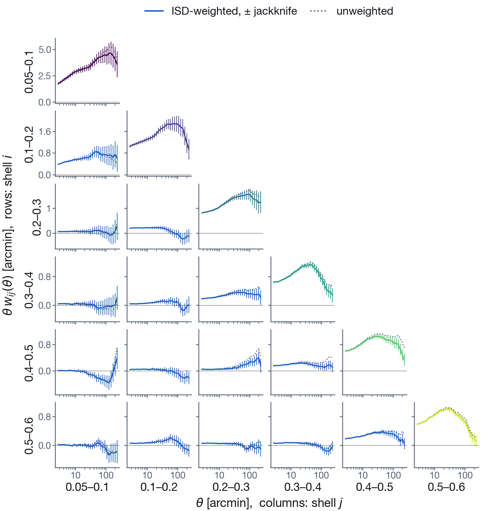
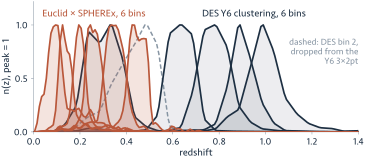
True n(z) of six Euclid × SPHEREx bins from reweighted spectra, against the DES Y6 lens bins (arXiv:2601.14559); each scaled to peak 1.
SPHEREx all-sky · how I work with Claude
Something funny
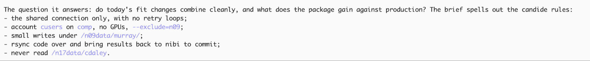
Euclid × SPHEREx · the catalogue
13.8 million Euclid sources: 5.2 million galaxies, 3.1 million of quality
all objects
galaxy sample
quality sample
stars
point-like
failed fits
removed by flags
13,784,773
5,206,897 (37.8%)
3,102,178 (22.5%)
1,233,310 (8.9%)
985,052 (7.1%)
5,751,542 (41.7%)
607,972 (4.4%)
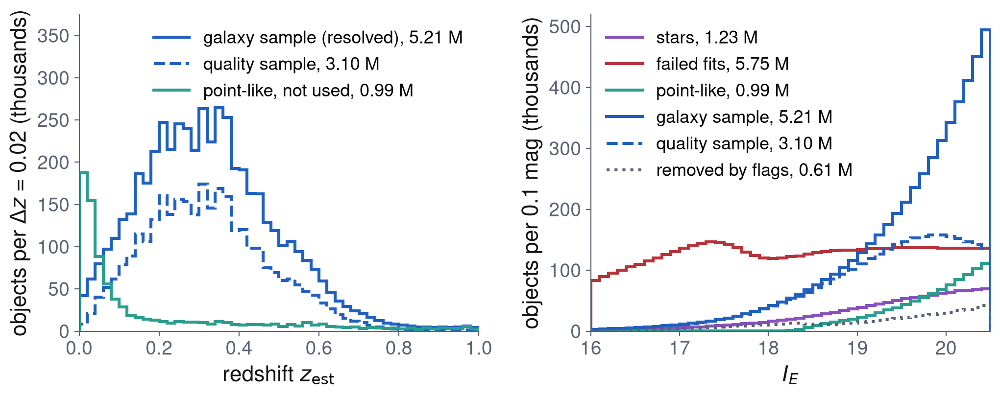
Selected on Euclid DR1 VIS, 16 < IE < 20.5, over about 1,950 deg²; forced SPHEREx photometry at the Euclid positions; redshifts from the SPHEREx spectra alone. Most failed fits are bright stars.
Euclid × SPHEREx · the redshifts
Four times tighter than Euclid's own photo-z
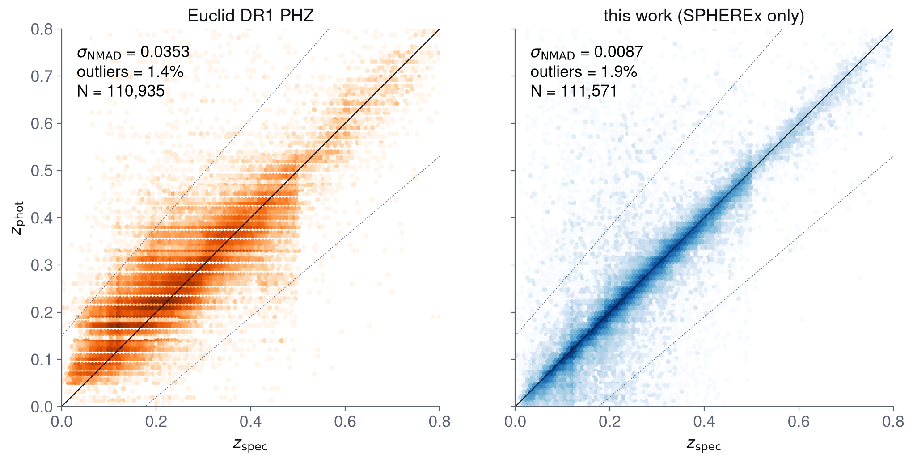
The galaxy sample against 111,571 spectroscopic redshifts (DESI DR1, 6dFGS, 2dFGRS, 2dFLenS, OzDES). σNMAD goes from 0.035 (Euclid DR1 PHZ) to 0.0087 (SPHEREx).
Euclid DR1 × SPHEREx
5.2 million resolved galaxies over about 1,950 deg², with redshifts from the SPHEREx spectra alone.
Against Euclid's PHZ
4.1× tighter overall; the quality sample (3.1 M) reaches 0.0075 with 0.5% outliers.
Slightly more outliers
1.9% catastrophic outliers in the galaxy sample, against 1.4% for PHZ.
Euclid × SPHEREx · the redshifts
Best for bright, low-redshift galaxies, where Euclid is weakest
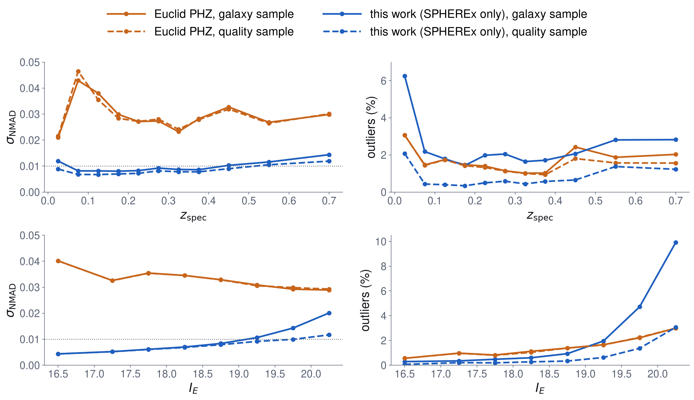
Scatter (left) and outlier fraction (right), against redshift (top) and magnitude (bottom). Euclid PHZ in orange, SPHEREx in blue; solid the galaxy sample, dashed the quality sample.
At IE ≈ 16.5 the scatter is about 0.004 against 0.040: about 9× tighter.
Tighter at every magnitude and redshift; still 0.020 against 0.029 at IE 20–20.5.
Outliers rise above PHZ's fainter than IE ≈ 19, and below z ≈ 0.05.
Euclid × SPHEREx
From Euclid to the entire extragalactic sky
The Euclid DR1 × SPHEREx galaxies glide onto the whole sky; the all-sky SPHEREx catalogue (Legacy Surveys DR9, DR10 and DR11 positions) fills in around them, and Euclid's footprint stays in orange.
SPHEREx all-sky · the catalogue
92 million objects: 71 million galaxies, 41 million of quality
all objects
galaxy sample
quality sample
stars
failed fits
removed by cuts
calibration stars
92,036,397
71,137,758 (77.3%)
41,294,489 (44.9%)
3,916,929 (4.3%)
11,872,782 (12.9%)
2,942,193 (3.2%)
2,166,735 (2.4%)
The same pipeline at Legacy Surveys DR9, DR10 and DR11 positions, r < 20.5, over the whole extragalactic sky. Preliminary: DR11 redshifts are not yet validated against spectra.
SPHEREx all-sky
The cosmic web over the whole sky, shell by shell
41 million galaxies at Legacy Surveys DR9, DR10 and DR11 positions, with redshifts from SPHEREx alone, in shells of Δz = 0.03 from z = 0.07 to 0.37.
Euclid × SPHEREx and all-sky · the validation
With the catalogue built, the validation splits it back out
puritystars, point-like, failed fits
Stars from a stellar fit in the same run. Removing 1 M point-like objects (mostly quasars and stars) takes Euclid outliers from 2.5% to 1.9%.
homogeneitydensity on the sky
The galaxy sample's Galactic-latitude gradient is gone; what is left, SPHEREx depth and stellar density, is regressed out with DES-style weights.
redshift qualityagainst spectra
Euclid: σNMAD0.0087, 1.9% outliers on 111,571 spectra. All-sky: 0.005 to 0.013 from r = 16 to 20.5, on 7.1 million.
shells × shellsclustering between redshift bins
Neighbouring shells correlate as their overlap predicts (r = 0.15–0.33); shells further apart, −0.03 to 0.08. No more anti-correlation round bright stars.
clustering redshiftsagainst DESI, all-sky
The mean redshift of every shell agrees with the spectra to ≤ 0.009. The 0.6–0.7 shell holds low-z interlopers, and is flagged.
CMB lensingagainst Planck
Euclid galaxies × Planck lensing at 9.7σ; lensing and clustering biases agree in all six shells.
Euclid × SPHEREx · the reaction
Possible applications
3×2pt analysis with Euclid ·Alex Hall, Hironao Miyatake
3×2pt analysis with UNIONS ·Calum, Cail, Martin, Antonin, ++
Intrinsic alignments with Euclid ·Benjamin Joachimi
Cosmological parity violations with galaxy shapes ·Yun-Hao Zhang
Photo-z calibration for Euclid ·William d'Assignies
Field-level inference ·Hardik Kuralkar, Mike Hudson
Cluster catalogues ·Lammin Ahad
Cross-correlations for gravitational waves
Mapping dust in the Universe ·Calum
Galaxy–galaxy lensing ·Divya Rana
Lots of other applications
UNIONS · what next
UNIONS with SPHEREx redshifts: thin lens bins below DES
What we have
UNIONS shapes over 3,500 deg², SPHEREx redshifts at the same positions, and DESI spectra over almost all of the footprint.
An independent Ωm
Six thin lens bins at z = 0.1–0.45, where DES Y6 has one.
That is where DESI's evolving dark energy shows, and it rests on Ωm, where the probes disagree.
Then DES alongside
DES + UNIONS: lensing over about 10,000 deg². A small group, me, Cail, Martin and a few others, doing DES-level work.
Six UNIONS × SPHEREx bins against the DES Y6 3×2pt lens bins, each scaled to peak 1. Our n(z) are the DESI redshifts of the galaxies in each bin; the DES bins are read from Fig. 2 of arXiv:2601.14559.
Dust in our universe · magnification
Quasars behind SPHEREx galaxies are magnified
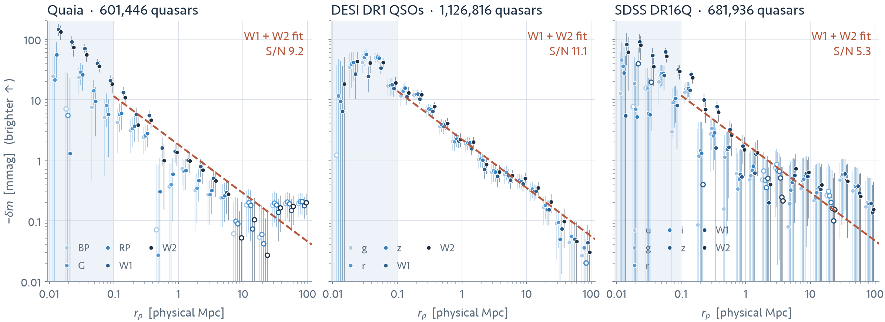
Quasars from three surveys, stacked behind the all-sky SPHEREx galaxies: the closer the galaxy, the brighter the quasar, in every band. Magnification is the same in every band; dust dims blue bands more than red ones, so the colours of the same shifts measure the dust.
Using:
Some small tools I made to help my work
Drapeaux au vent · my to-do list
Chat · just saves me opening firefox... also local models
Caffeinate
Usage
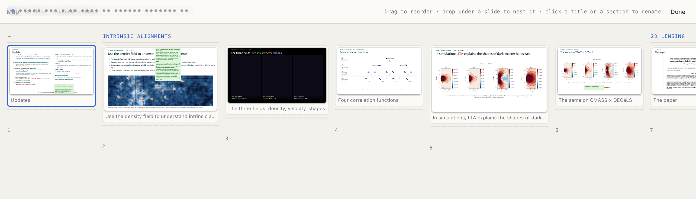
Lectern · so I can edit AI created slides like keynote


 Six UNIONS × SPHEREx bins against the DES Y6 3×2pt lens bins, each scaled to peak 1. Our n(z) are the DESI redshifts of the galaxies in each bin; the DES bins are read from Fig. 2 of arXiv:2601.14559.
Six UNIONS × SPHEREx bins against the DES Y6 3×2pt lens bins, each scaled to peak 1. Our n(z) are the DESI redshifts of the galaxies in each bin; the DES bins are read from Fig. 2 of arXiv:2601.14559.